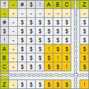
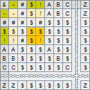
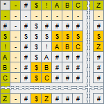
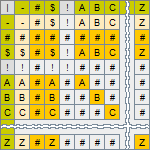
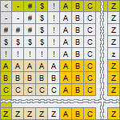

The Algebra of Symbols (AoS) is a common name for an algebraic structure, whose operations are defined on the set of symbols. It has been constructed as part of the Kaleidoscope project, and is thought up for mathematical modeling of the behavior of the Qualitative Dynamical Systems (QDS)s. The algebra, thus, is a source of symbols used for denoting the values of the qualitative variables representing states of modeled properties of the QDSs, from the one hand, and the operations needed for computation of qualitative multivalued dependence relations of the variables, on the other hand. It is, therefore, used within the project for creating experimental mathematical models of QDSs of varying degrees of complexity. So, the meaning of operations of the Algebra is determined by the nature of the qualitative dynamical systems for modeling of which it is used.
The Algebra of Symbols (AoS) is built on a set of symbols and is a collection of operations, defined on that set. The algebra serves as instrument for developing mathematical models of qualitative dynamical systems that represents qualitative properties of the modeled systems as qualitative variables taking their values from the set of symbols of the algebra, on the one hand, and describes behavior of the systems in the form of algebraic expressions written as composition of operations of the algebra, on the other hand.
Definition of the Algebra of Symbols
The mathematical structure of the AoS includes:
- Domain set of symbols: D = { A, B, C, ..., Z, ... }, whose elements are used to represent states of the modeled qualitative system properties.
- Auxiliary set of symbols: X = { -, #, $, ! }, elements of which are intended to represent intermediate values that can be produced in the process of computation of algebraic expressions.
- Carrier set of the algebra: S = X U D defined as a union of auxiliary set X and domain set D.
- Collection of five binary operations O = { ?, &, *, |, < }, named: Equivalence, Conjunction, Production, Disjunction, and Application respectfully, defined on the set A.
Comment. While symbols "!", "$" and "#" are used for representing certain states of the process of computation of the dependence relations and therfor their meaning will be described later, as a part of explanation of operations of the algebra, the symbol "-" plays in the definition of an algebra more general role - it is the zero element of the algebra. It is the absorption element of operations Equivalence and Production and the identity element of operations Conjunction and Disjunction of the algebra.
Definition and Explanation of the Operations
Provided below definitions of operations of the Algebra, for visualization and convenience of description of the rules of work of the operations, are presented in the form of small square 9 x 9 tables, framed by the headings located on the left and the top sides of the tables, which contain the symbol of the operation and the symbols of the operation’s operands. Table cells present symbols that the operations return for the operands indicated in the headers of their rows and columns. The tables defining operations Equivalence, Conjunction, Production and Disjunction are symmetrical about their main diagonal; that is, of the line connecting their upper left and lower right corners. The order of values passed to these operations as their operands is, therefore, irrelevant. Unlike these four operations, the table defining the Application operation is not symmetrical. The behavior of this operation is explained by its role in the process of computation, which is described below.
Highlighted with greenish color headers of the tables indicate values of the operands used when the operations are applied for computation of qualitative functional dependencies of some variables of qualitative mathematical expressions on the values of other variables; whereas groups of cells highlighted in the orange color indicate output of the operations being yielded during the process of computation of the expressions.
The accompanying definition of the operations, their short annotations are expanded later, when the roles of the operations in the process of computation of qualitative mathematical models of behavior of the qualitative dynamical systems is considered.
Equivalence operation:
The Equivalence operation is denoted by the symbol "?". It is used in the process of recognition of situations and is used to compare the current values of a group of variables of a model, a particular combination of which characterizes a certain situation possible in the system with values describing the expected situation.

This operation takes two arguments, both of which are symbols belonging to the set D, and returns either the character "!" or the character "$" both belonging to the set X; where the character "!" denotes the fact that the characters representing the values of the arguments turned out to be the same, and the symbol "$" denotes that they are not.
Conjunction operation:
The Conjunction operation is denoted by the symbol "&". Like the Equivalence operation, this operation is used in the process of recognition of the situations. The operation is applied to the results of the Equivalence operation to confirm that all the results of its comparison of the current state of the variables of the model and their expected values matched, and thus the situation is considered as recognized.

This operation takes two arguments, both of which are symbols of the set X, which, following the purpose of the operation, can be either the symbol"!" or the symbol "$". Acting like the classical conjunction operator, it returns the symbol "!" only in case when its arguments turn out to be the symbol "!". For all other combinations of argument, it returns the "$" symbol.
Production operation:
The Production operation is denoted by the symbol "*". The role of this operation in the process of computation of the state equation of the system is to produce the value of the proposed next state of the system corresponding to the recognized situation. Therefore, it is applied to the result of the recognition of a situation obtained after the multivalued conjunction has been assessed.

This operation takes two arguments, one of which (let's say is the first one) is the symbol the operation is to produce, i.e. the symbol of the set D, and the second is a symbol denoting the fact of recognition or not recognition of the situation, i.e. symbol "!" or "$" of X set. The operation returns value of the first argument when its second argument confirms the fact that the situation was recognised, or the symbol "$", i.e. the value of the second argument, when the situation was unrecognized.
Disjunction operation:
The Disjunction operation is denoted by the symbol "|". Like the Conjunction operation, it is performed after the preceding element-by-element operation applied to a group of the pairs of symbols. And in this case, it is used to combine the results of the Production operation.
Each variable of the model can, in the process of modeling the behavior of the system, take on different states, denoted by symbols from the set D, corresponding to different and possibly simultaneously occurring situations. At the same time, situations occurring simultaneously may suggest changes in the state of the variable, transferring it to the same or different states. Therefore, the role of the Disjunction operation in the process of generating the next state of the system is to process all the results proposed by the Production operation and obtain the only final value proposed as the next state of the model variable.

This operation takes two arguments, each of which can be either a symbol of the set symbol D or a symbol of the set X, and produces a result that may also be either a symbol of the set symbol D or a symbol of the set X. It returns the $ symbol when none of the expected situations is recognized; a symbol of either argument when both of its arguments are the same symbol from D; or the symbol "#" when either its arguments are different symbols of set D, or when any (or both) of its arguments are the symbol "#".
Application operation:
The Application operation is denoted by the symbol "". This operation is the final one in the XDNF calculation scheme and is used to inject into the current state of the system the result of calculating the next state of the level of the proposed value obtained at the previous steps of the calculation. This proposed value can be represented by the symbol of the set D. But it may also turn out that in the process of calculating the next state of the system, none of the expected situations occurred and therefore the proposed value of the next state is not calculated. As described above, in this case, the model can be represented by one of the characters: "-", "$" or "#". Therefore, the task of the Apply operation is to replace the current value of the state of the variable in the case when the proposed next state of the system is defined, i.e. represented by any character from the set D, or do not change the current value of the variable otherwise.

Unlike all other algebra operations, this operation is non-commutative, so the order of the arguments passed to it is important. Its first argument is the current value and the second argument is the proposed value of the variable being evaluated. The operation returns the value of the second argument (i.e., the proposed value) when the symbol representing it belongs to the set D, or the value of the first argument (i.e., the current state of the variable) when the proposed value is undefined, i.e. is any of the symbols belonging to the set X.
All the described operations of the algebra are closed under the set S, and therefore can be used in the mathematical expressions written as a composition of the operations. Also, as it can be seen from the definitions of the operations, the auxiliary symbol “-” is zero of the multiplications and additions operations, and thus is the absorption element of both multiplication operations and is the identity element of both addition operations.
Associativity, Commutativity and Distributivity Properties of the Operations of the Algebra
Results of testing the operations for their ability to satisfy the laws of commutativity, associativity and distributivity is presented in the Table 1.
E C P D A E C P D A E C P D A E C P D A E C P D A
~ ~ ~ ~ ~ ~ ~ ~ ~ ~ ~ ~ ~ ~ ~ ~ ~ ~ ~ ~ ~ ~ ~ ~ ~ ~ ~ ~ ~ ~ ~ ~ ~ ~ ~
A C | D D N N N A C | N D N N N A C | N N N D N A C | N N N D N A N | N N N N N
Table 1. Result of commutativity, associativity and distributivity test conducted for all operations.
This table contains five columns representing result of testing of all five operations: Equivalence Conjunction, Production. Disjunction and Application. The result of testing each operation is provided in the form of a row of seven space-separated elements located below the separation line.
The first two elements of the row represent testing result whether the operation is commutative and associative, while the remaining five elements represent test results whether the operation is distributive with each of the five operations. These operations are designated by the first letter, taken from their names, and are located above each of the five elements. Adherence of the operations to the commutativity law is designated by the letter C, to the associativity law by the letter A, and to the distributivity law by the letter D. Case when result of the test is not confirmed is designated by the letter N. So, while interpreting the letters: C, A, D, and N one would say that:
- The Equivalence operation is commutative (by definition), associative, and distributive with itself and with the Conjunction operation.
- The Conjunction operation is commutative (by definition), associative, and distributive with itself only.
- The Production operation is commutative (by definition), associative, and distributive with the Disjunction operation only.
- The Disjunction operation is commutative (by definition), associative, and distributive with itself only.
- The Application operation is not commutative (by definition), associative, and not distributive with any of the other operations.
Application of the Algebra of Symbols
Application of the algebra to creation of qualitative system models includes creation of a collection of qualitative variables, called variable assertions, names and values of which represent names and states of modeled properties, as well as description of dependence relations of the state of some variables of model on the state of others, in the form of a functional equation. The left side in this equation is an independent variable of the equation, the state of which is calculated on the right side of the equation, and the right side contains description of the procedure of computation of the value of the variable located on the left side. This part is written in the form of expression of the algebra of symbols. Its structure is an extension of the principle of representation of binary functions, known as disjunctive normal form - DNF, to the description of expressions whose variables are multivalued variables of the algebra of symbols. To emphasize the fact that this notation is a generalization of DNF, it is called XDNF. The letter X in the name of the generalized DNF is a reminder that in the process of its computation, a subset of auxiliary symbols of the set S, denoted by the letter X in the definition of the algebra of symbols, is used.